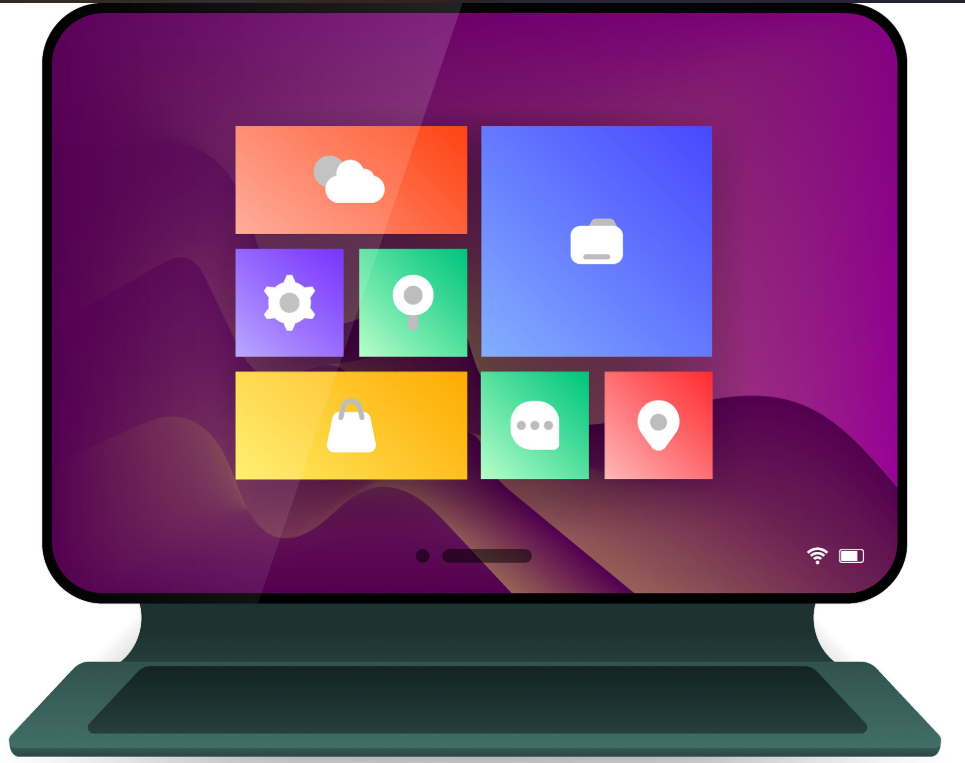
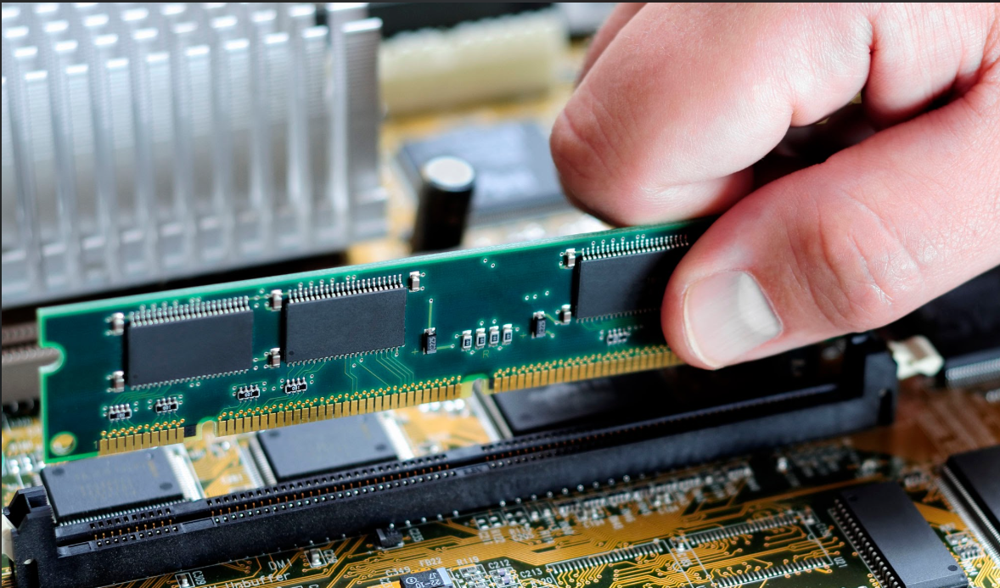
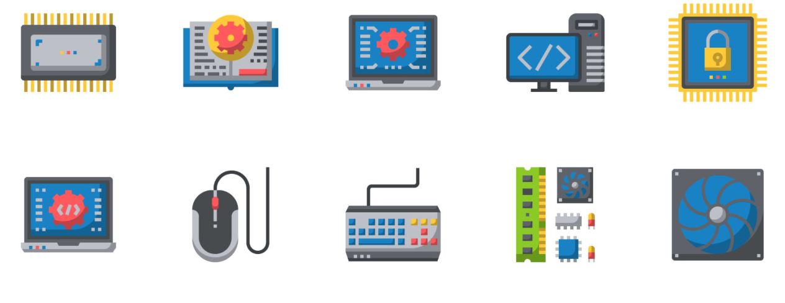

Un sistema operativo (SO) es el programa imprescindible que actúa como intermediario entre el usuario y los componentes físicos (hardware) de cualquier dispositivo, ya sea una computadora, un smartphone, una tablet o un consola de videojuegos. Sin él, el equipo sería solo un conjunto de piezas electrónicas sin capacidad de responder a nuestras instrucciones.

Cuando abres una aplicación, el sistema operativo le asigna un espacio temporal en la memoria RAM y determina cuánto tiempo del procesador (CPU) requiere. Esto permite realizar multitarea: ejecutar un navegador de internet, un reproductor de música y un editor de texto al mismo tiempo sin que el sistema colapse.

El sistema operativo organiza la información en una estructura clara de carpetas y archivos dentro del disco de almacenamiento. Asimismo, se encarga de reconocer y controlar todos los periféricos conectados —como teclados, mouses, impresoras o memorias USB— traduciendo las señales electrónicas para que las aplicaciones puedan utilizarlas directamente.

Trabajo realizado por Martina Seri de 4B